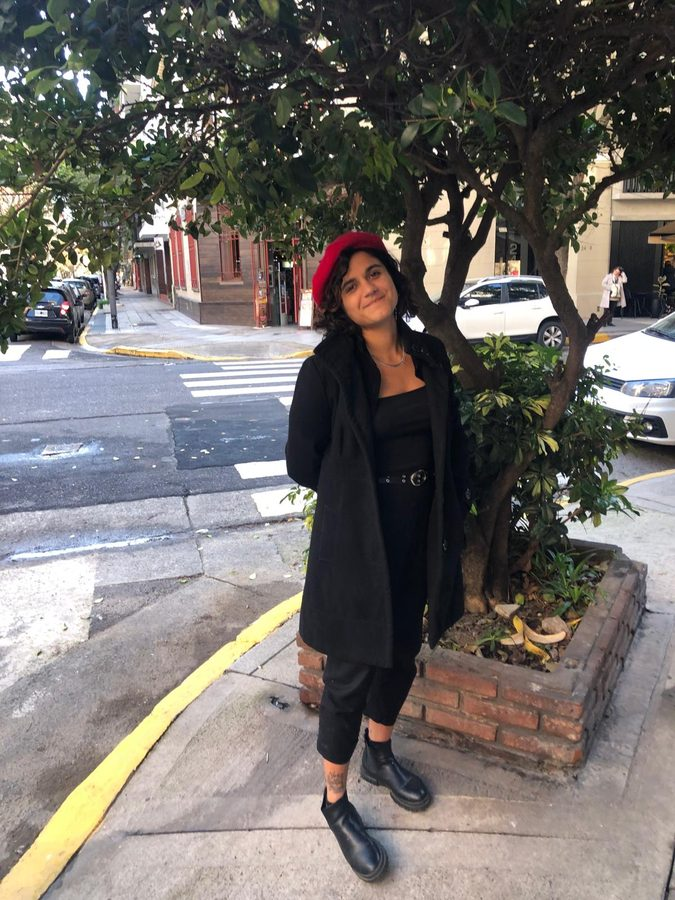
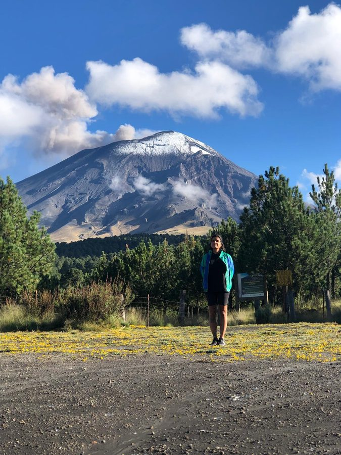
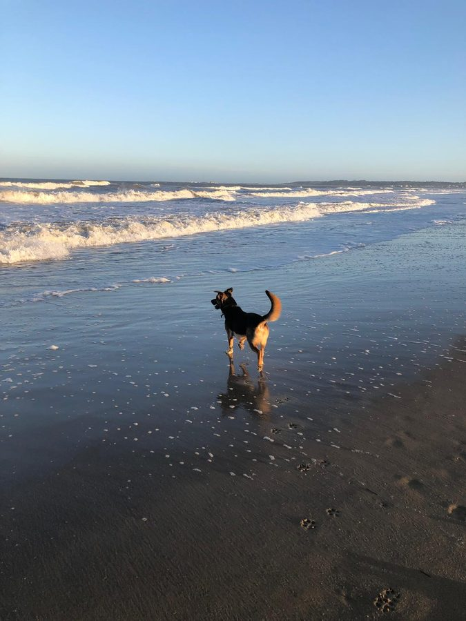

MarianaRodriguezPaseyro

Growth marketer. Part strategy, part troubleshooting.
- Phone(+598) 092 068 681
- Emailmarianaarodd@gmail.com
- LinkedInin/marianarodriguezp
- Instagram@maariirodd
Uruguay-based growth marketer with 8+ years of experience building and scaling acquisition systems for brands in eCommerce, wellness, fintech, and lead gen. I’ve worked across Google, Meta, Amazon, and TikTok, and one thing I’ve learned is that growth marketing sounds simple until you’re three layers deep trying to understand why a funnel that worked last quarter suddenly doesn’t.
Most of the job, in my experience, comes down to asking better questions than the ones already on the table. The full version is in my CV, but the short version is that I like being close to the actual decision, not three Slack threads away from it.
Selected results
-
Google Ads · Legal
Law firm lead generation — CPA cut by 90%
+847% conversions (15 → 142)CPA $71 → $7.47CVR 4% → 31.9%
-
Google Ads · eCommerce
Outdoor gear — conversions ×4.6 at $50K/month
+363% conversions (342 → 1,583)Cost/conv $146 → $31+146% clicks
-
Google Ads · Lead gen
Construction — CPL cut by 73% at $50/day
+281% conversions (26 → 99)CPL $76.65 → $20.61
-
Meta Ads · GoHighLevel
Fraud recovery — 140 leads at $18 CPL
CTR 1.5–2.5%Landing page CVR 15–25%$2,500 monthly ad spend
Toolkit
- Paid advertising
Google Ads/ Meta Ads/ Amazon PPC/ TikTok Ads/ LinkedIn Ads/ Pinterest/ Bing Ads/ Taboola
08 - Analytics & tracking
GA4/ GTM/ Looker Studio/ Meta Pixel/ TikTok Pixel/ SEMrush/ SpyFu/ Hotjar/ Adalysis/ Optmyzr/ VWO
11 - eCommerce
Amazon Seller Central/ TikTok Shop/ Shopify/ Helium 10/ Jungle Scout
05 - CRM & automation
GoHighLevel/ HubSpot/ Salesforce/ Mailchimp/ Zapier/ ClickUp/ Asana
07 - Design & web
Figma/ Photoshop/ Illustrator/ Canva/ WordPress/ Instapage/ Unbounce
07 - Languages
Spanish — native/ French — native/ English — professional
03
Outside of work
I surf, which taught me that timing matters and forcing things rarely helps.
I cook, and I usually lean toward savory over sweet because it gives me more room to improvise. The spicier, the better. I also produce music, and more recently I’ve fallen into the very enjoyable rabbit hole of DJing with turntables. My taste goes in a lot of directions, but I’ll always have a soft spot for ’80s house, anything with groove, and a permanent little corner of my heart reserved for cumbia. Here’s some music I made a few years ago: Bandcamp.
I love being in nature, especially mountains and long trails, anything that makes the day feel a little bigger. One of the most memorable experiences was hiking near Popocatépetl in Mexico, an active volcano that was clearly doing its thing while I was standing next to it, trying to act casual.


That same Mexico trip I tried crickets, chapulines, and a scorpion. The scorpion was a dare. The chapulines were a revelation, crunchy and salty. Unexpectedly, the chapulines had real movie-snack potential and I’m willing to be judged for that.
At home, I work alongside Rodolfo, my dog, who has zero input on strategy but a very strong opinion on when it’s time for a break.